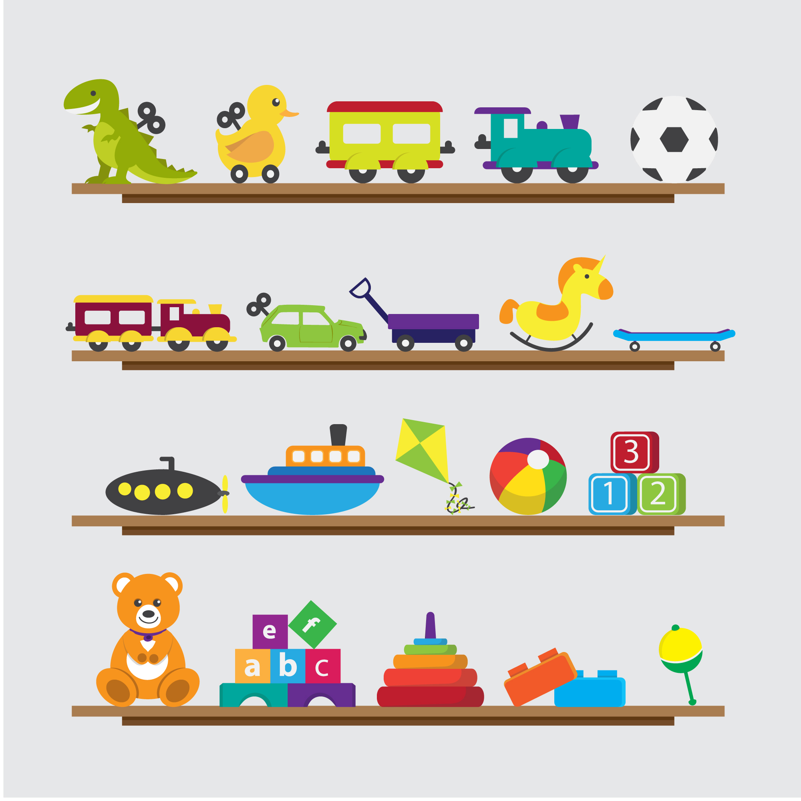

Bir Çocuğun En Doğal Hakkı Oyun ve Animasyon
Oyunlar ve animasyonlar, bir çocuk için en vazgeçilmezler arasında yerini alır. Oyun mu? Ders mi? sorusuna her zaman ilk seçenek tercih edilir. Aslında oyunu tercih sırasına koymak da bir önemli bir adımdır bizim için. Çünkü öğrenmek oyun ile başlar hayatta.
Eğer bir hayvanın doğumuna, büyümesine tanık olduysanız (En kötü ihtimal belgesellerden izlediyseniz) şunu göreceksiniz: Hayatta kalma becerilerini oyun sayesinde öğrenirler. İki sevimli köpek yavrusu yan yana geldiğinde daha yumuşak hareketlerle birbirlerini alt etmeye çalışmalarına tanık olursunuz. Bu hareketler o bireyin gelecek yaşantısına dair fikirler verir.
Çocukluğumuzu hatırlayalım, bizler küçükken ebeveynlerimizden gördüğümüz davranışların benzerlerini yapmaya çalışırdık. Erkek çocuklara oyuncak arabalar, kız çocuklara oyuncak bebek, minik ütü, tencere tava gibi ev gereçleri olan oyun setleri alınırdı. Bu davranışlar her zaman olduğu gibi bireylerin sosyal rollerini genç nesillere aktarma örneğidir. Yani bir öğretim etkinliğidir.
Gelmek istediğim nokta şudur : Çocuklarımıza yönelik, ebeveynlerimiz ya da öğretmenler olarak bizlerin en çok şikayet ettiği konular şunlardır ;
Oyun başından kaldıramıyoruz
Evet kaldıramıyoruz, çünkü çocuklar geleceğe dair kazanımlar elde etmek istiyorlar, biraz ciddiye alınmak istiyorlar ve (oyun oynamayanlar için söylüyorum) artık oyunlar bizim zamanımızdaki gibi karakteri sadece bir işe koşturmuyor, oyun ortamında (sanal dünyada) o çocuğa o kadar çok görev veriliyor ki, o çocuk sanki ülke yönetiyormuş, bir savaşı yönlendiriyormuşçasına misyon ediniyor. Niçin kalksın ki başından?
Konuştukları dili anlamıyoruz
Sanal dünyada birçok misyon edinen çocuğumuz elbette ki o dünyanın dilinde konuşacaktır. Biliyorsunuz ki günlük hayatta karşılaştığımız “Plaza Dili” kaosu gibi bir durumdur bu. Sanal dünyada iletişim kurduğu “nesneler” ile dış dünyada iletişim kurduğu biz insanlar arasında bir anlam bulmuyor bu sanal dil.
Sonuca geliyorum...
Yukarıda bir çoğumuzun küçüklüğünde yaşadığı durumlardan örnekler sunarak oyunun bireyin gelişiminde ne derece önemli olduğunu vurgulamaya çalıştım. Kısaca bizler çocuğumuzun hangi yönlerde gelişmesini istiyorsak, o alanla iligli materyallerin benzerlerini, “sulandırarak”, dozunu azaltarak onlara veriyoruz ve o hissiyatı tatmalarını istiyoruz. Geleceğe dair bir şeyler kazanmalarını ta küçük yaşlarda öğrenmelerini istiyoruz. Evet çocuklarımızda bizim şikayet ettiğimiz bazı davranışlar var ama neden? Efendim, ebeveynler çocuklarını tanımak için çaba sarf ediyorlar mı? Bunu merak ediyorum. Çocuklarına gerçek hayat görevleri veriyorlar mı? Bisikleti bozulduğunda “beraber yapmak” düşüncesi mi taşıyorlar yoksa “baba işe giderken tamirciye bırakır, gelirken de bisikleti getirir” düşüncesi mi hakim? Bu soruları sormamızda fayda var yoksa çocuklarımız BÜYÜK misyonlar edineceği global(!) sorunlara meyledecektir.
İğneyi ebeveynlere, çuvaldızı biz öğretmenlere batırma vakti geldi.
Biz öğretmenler hala derslerimizi 40 dakika boyunca konuşup soru sormaktan yana mı planlıyoruz? Hatırlamamız gereken bazı mesleki kavramlar var. Ders planlarken içinde gezinmemiz gereken bazı sınırlar vardır. Ülkenin geleceğini öngören bir uzak hedef vardır ve tüm alt basamaklar buna göre şekillendirilmelidir. Bakınız: 1739 sayılı Milli Eğitim Temel Kanunu Madde 2.
I – Genel amaçlar: Madde 2 – Türk Milli Eğitiminin genel amacı,Türk Milletinin bütün fertlerini, 1. (Değişik: 16/6/1983 - 2842/1 md.) Atatürk inkılap ve ilkelerine ve Anayasada ifadesini bulan Atatürk milliyetçiliğine bağlı; Türk Milletinin milli, ahlaki, insani, manevi ve kültürel değerlerini benimseyen, koruyan ve geliştiren; ailesini, vatanını, milletini seven ve daima yüceltmeye çalışan, insan haklarına ve Anayasanın başlangıcındaki temel ilkelere dayanan demokratik, laik ve sosyal bir hukuk Devleti olan Türkiye Cumhuriyetine karşı görev ve sorumluluklarını bilen ve bunları davranış haline getirmiş yurttaşlar olarak yetiştirmek; 2. Beden, zihin, ahlak, ruh ve duygu bakımlarından dengeli ve sağlıklı şekilde gelişmiş bir kişiliğe ve karaktere, hür ve bilimsel düşünme gücüne, geniş bir dünya görüşüne sahip, insan haklarına saygılı, kişilik ve teşebbüse değer veren, topluma karşı sorumluluk duyan; yapıcı, yaratıcı ve verimli kişiler olarak yetiştirmek;
Güncellik
Öğretmenler, bizler, güncellemeyi bilgisayarlarımıza yaptığımız kadar kendimize yapıyor muyuz? Günlük yaşamda insanlar kalemi kağıdı etkin kullanıyorsa, öğretmenin origami bilmesi gerekir. Öğretmen her zaman bir adım önde olmalıdır ki rehber olabileceği geleceğin yetişkinlerine bireye uygun kapılar gösterebilmelidir, ufuk açabilmelidir. Artık bilgisayarı her alanda kullanıyoruz, peki bilgisayarı ciddi anlamda kullanabiliyor muyuz? Ürün çıkarabilecek hale gelebiliyor muyuz? En önemlisi kendi alanımızda bir ürün çıkartabilmeyi gösterebiliyor muyuz? Yoksa çocuklar bizden hala bir adım önde mi? Kendimizi güncellemeliyiz.Oyun ve Öğretmenler
Bizler 40 dakika ders anlatımlarından çıkarak oyunlaştırma ile dersleri vermek üzerine düşünürsek ancak istendik hedeflerimize ulaşacağımızı düşünüyorum. Öğrenci oyun oynuyorsa, öğretmen oyun yapmalı, öğrenci sosyal medyada istemediğimiz davranışlar sergiliyorsa, öğretmen sosyal medyada onun dikkatini çekmelidir. Kısacası biz onlara geleceğin sulandırılmış misyonlarını onlara oyun sayesinde veremezsek onlar bilinçsiz bir şekilde tercihlerini yapacaklardır ve o yönde ilerleyeceklerdir. Bitti :)kaynaklar
GörsellerTweet
1739 sayılı Milli Eğitim Bakanlığı Temel Kanunu